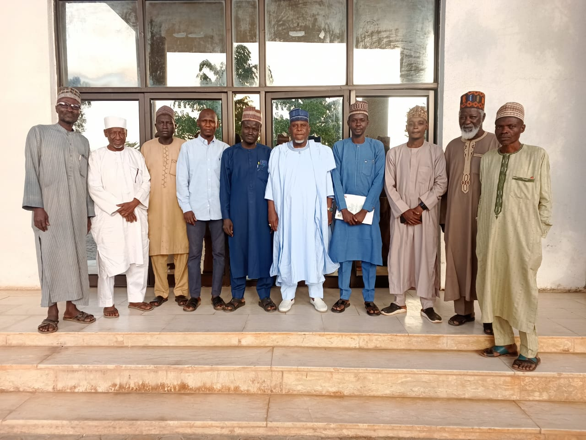

Posted on November 19, 2024
In furtherance of its noble dreams of a new Northern Nigeria where the desired changes in the socioeconomic and political spheres of the Region become realities, a special delegation of the Arewa Progressive Eagle Movement (APEM) led by her Chairman and Chief Executive Officer, Babangida Ibrahim Dauda has paid a courtesy visit on the leadership of the Jama'atul Nasril Islam (JNI) at its National Headquarters in Kaduna, Kaduna State. The Movement intimated the JNI of her mission and visions about the North and her efforts so far towards exploring possible solutions to the perennial challenges bedeviling the Region.
APEM also sought support and encouragement of the Islamic religious organisation to enable it to actualise its goals and objectives of majorly triggering economic diversification and social reorientation of the region for desired economic growth and development.
JNI National Secretary General, Prof. Sheikh Khalid Abubakar Aliyu who in company of other members of the National Body of the JNI received the APEM Delegation, expressed joy and satisfaction with APEM and her blueprints stressing that the organisation reminds him of the late Premier of the Northern Region, Sir Ahmadu Bello (Sardauna of Sokoto). Prof. Khalid Aliyu said APEM shares the mission and visions of the late Sardauna of Sokoto about the North.
The JNI National Scribe, admonished APEM to remain committed, steadfast and just to its cause. He prayed Allah to give more wisdom, and knowledge and foresight to the leadership of APEM and to also guide and protect them as they champion the noble cause of proffering genuine solutions to the challenges facing the Northern Region.
The JNI pledged her support to APEM and further assured of readiness to do all it takes to assist APEM to carry out its activities across the Region. JNI also commended leadership of APEM for coming up with the initiative and urged it to reach out to the illustrious sons and daughters of the region.
Chairman and Chief Executive Officer of APEM, Babangida Ibrahim Dauda expressed appreciation to JNI for the support and encouragement it has shown to APEM and assured of the determination of the organisation to turn the fortunes of the North for the best. He also appeals for support of all and sundry towards success of the organisation.
The delegation continues with its assignment of reaching out to prominent personalities and organisations in its bid to drum up support for the organisation.
Signed:
Adamu Maikasuwa Saluwe
Director, Public Affairs and Corporate Communications
19th November, 2024